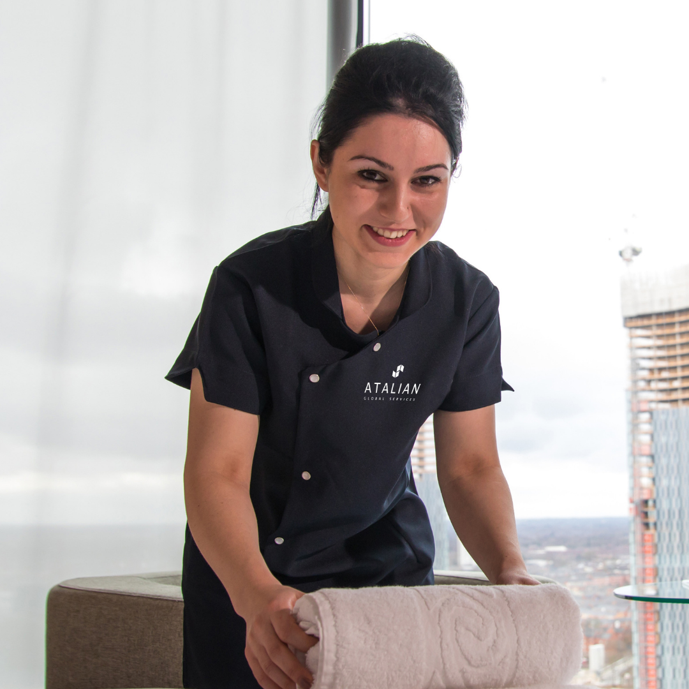

A Simple Way est l’un des leaders mondiaux du Facility Management.
A Simple Way est l’un des leaders mondiaux du Facility Management.
Implanté dans 20 pays sur 4 continents, ATALIAN accompagne les entreprises et les
organisations dans l’externalisation des services aux bâtiments et aux occupants
en apportant des solutions personnalisées créatrices de valeur.
A Simple Way intervient dans les secteurs d’activités et les environnements les
plus divers avec une offre globale et intégrée de prestations conformes aux exigences
les plus élevées.


Avec sa large palette de savoir-faire métier et d’expertises
sectorielles, ATALIAN peut prendre en charge tout ou partie
des services que vous souhaitez externaliser. Ses équipes peuvent
délivrer des prestations mono-services, multiservices ou full-service
(FM intégré) en fonction de vos besoins, de votre organisation et de vos budgets.
ATALIAN effectue en propre plus de 85 % des prestations qui lui sont confiées
et pilote les autres prestations en déléguant leur exécution à des partenaires
de confiance sélectionnés pour leur qualité de service irréprochable.

Nous intervenons dans des dizaines de milliers d’espaces de travail,
de vie et de loisirs. Nous les entretenons, les sécurisons, les rendons
plus sains, plus chaleureux et plus fonctionnels pour qu’ils offrent une
expérience unique à leurs occupants et leurs utilisateurs et pour en faire
des actifs de valeur.
Permettre aux organisations de se concentrer sur leur cœur d’activités et
d’améliorer leurs performances en prenant soin des personnes et de leur
environnement est notre raison d’être